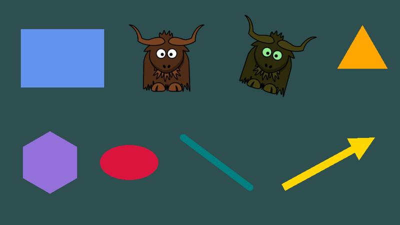

Features
Platforms
- Windows, Linux and macOS, x64 and arm64, from one codebase.
- Direct3D 11, Vulkan and OpenGL, chosen automatically or by you, and switchable while running. (macOS uses OpenGL or Vulkan via MoltenVK; the Metal backend is currently disabled.)
- .NET 10, from a single NuGet package. SDL2 and all other native libraries are included; there is nothing else to install.
- Built on NeoVeldrid (a maintained fork of Veldrid) and SDL2.
Application framework
- A simple lifecycle: implement nine methods and yak2D runs the window, loop, input and GPU for you.
- Fixed, adaptive or variable update steps, with optional "catch up" updates for smooth motion.
- Resource management with typed references and automatic clean-up, and clear handling of graphics device resets.
- Window control: size, fullscreen (exclusive or borderless), resizable, title, vsync, opacity, cursor.
2D drawing

- Draw stages that sort by layer, depth and texture, and batch automatically.
- Coloured, textured and dual-textured triangles, from helpers, a fluent shape builder or your own vertices.
- Quads, regular polygons, circles, lines, arrows, outlines and custom polygons.
- Per-vertex colours, texture tinting, wrapping and mirroring, sprite sheets, flipping.
- Layers and depth with correct transparency.
- Blend states: alpha, additive and override.
- Bitmap font text: a built-in font, BMFont loading, justification, kerning and measuring.
Cameras and coordinates
- 2D cameras with a virtual resolution (resolution independence), focus, zoom and rotation.
- World and screen space drawing, side by side.
- Viewports for split screen and picture-in-picture.
- Coordinate conversion between window, screen and world positions (mouse picking).
- 3D cameras for mesh rendering.
Rendering pipeline and effects

- A render queue that chains stages through render targets in any order.
- Colour effects: single colour, grayscale, colourise, negative, opacity.
- Bloom, blur and directional blur.
- Style effects: pixellate, edge detection, static, old movie, CRT.
- Mixing up to four surfaces, with per-pixel masks.
- Distortion: height-map based ripples and shock waves, with helpers.
- 3D mesh rendering: quads, spheres, cubes and CRT-shaped meshes, with up to 8 lights.
- Smooth transitions between effect settings.
- Custom shaders in GLSL, compiled at runtime for any graphics API.
- Custom Veldrid stages for full low-level access (compute shaders and more).
- GPU to CPU readback of any surface.
Input
- Keyboard, mouse and gamepads, with held, pressed-this-update and released-this-update states and hold durations.
Not included
yak2D deliberately does not include audio, physics, networking, an entity system or a visual editor. Use any .NET library you like alongside it.